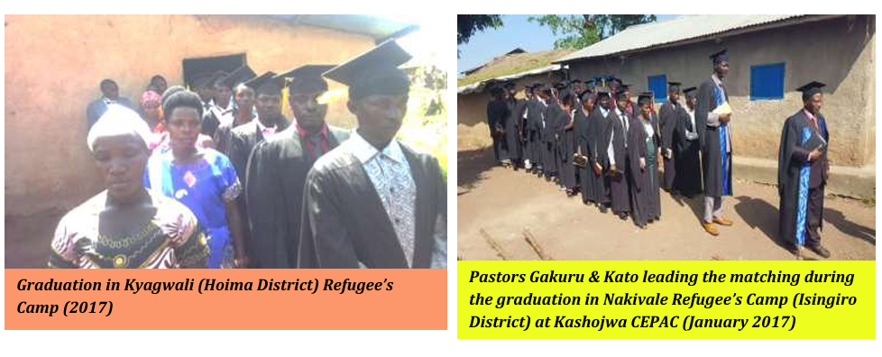

Chaplaincy Program
Our Chaplaincy program is designed to equip individuals with the skills and knowledge needed to provide spiritual care and support in various institutional settings. Through comprehensive training, participants learn to minister effectively in hospitals, schools, prisons, and other community institutions.
The program combines theological education with practical ministry skills, preparing chaplains to address the spiritual, emotional, and psychological needs of those they serve. Our graduates are equipped to provide compassionate care while respecting diverse faith traditions and cultural backgrounds.

Some of the program activities
From right our co-ordinator Rosemary Bako and the Prison Officers offer a Bible and P.B.S Certificate to the inmate after the P.B.S training in Arua Prison(August 2024) and some of the graduation ceremonies
